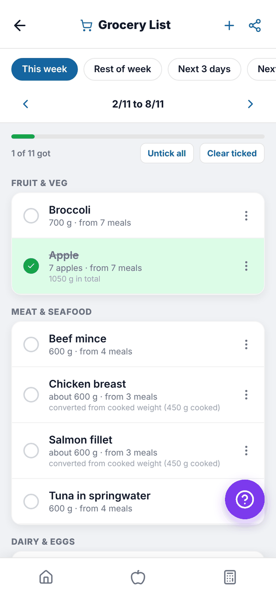
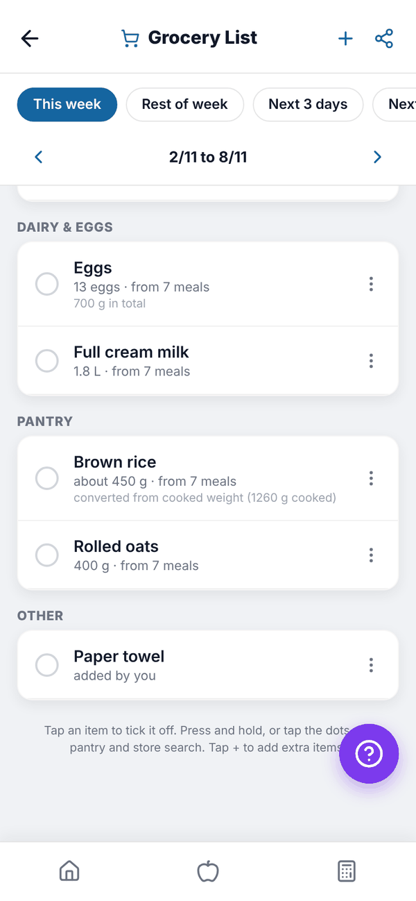
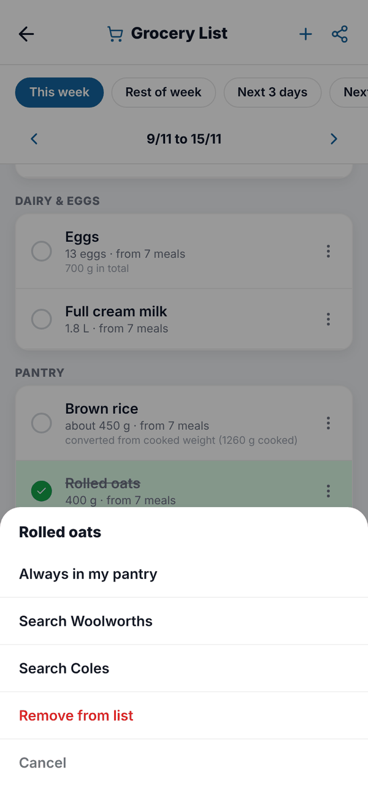

Totality Nutrition guide
Grocery List
A shopping list built from your Meal Plan, grouped by aisle, with ticks, pantry staples, extra items and sharing.
The Grocery List turns your Meal Plan into a shopping list. It's Trial and Paid. On Free the tile is locked.


How the list is built#
Every food in your Meal Plan for the chosen days is added up, grouped by supermarket aisle (fruit and veg, bakery, meat and seafood, dairy and eggs, pantry, snacks, drinks, frozen, other), with duplicates merged. Amounts are friendly ("13 eggs", "1.8 L", "about 450 g"), and cooked weights like rice are converted to what you buy ("converted from cooked weight").
Pick which days to shop for with the chips at the top: This week, Rest of week, Next 3 days or Next 7 days. With This week the arrows move week by week.
While you shop#
- Tap an item to tick it off. Ticked items drop to the bottom of their aisle, and the bar shows "1 of 11 got".
- Untick all clears every tick. Clear ticked removes ticked items from the list (you'll be asked to confirm).
- Press and hold an item, or tap its three dots, for more: Always in my pantry, Search Woolworths, Search Coles or Remove from list.

Items you mark Always in my pantry move to a collapsed In your pantry section, so you're not told to buy salt every week. Removed items can be brought back with Show removed items again.
Add extra items#
Tap + at the top, search for a food, set How much do you need? (g) and tap Add to List. Extra items show "added by you".
Share the list#
Tap the share icon at the top right. The list is shared as text, grouped by aisle, with only the items you haven't ticked.
Questions#
My grocery list is empty.
It's built from your Meal Plan. Add foods to your plan first, or tap Go to Meal Plan.
Do ticks save if I close the app?
Yes. Ticks, removals and pantry items are saved to your account.